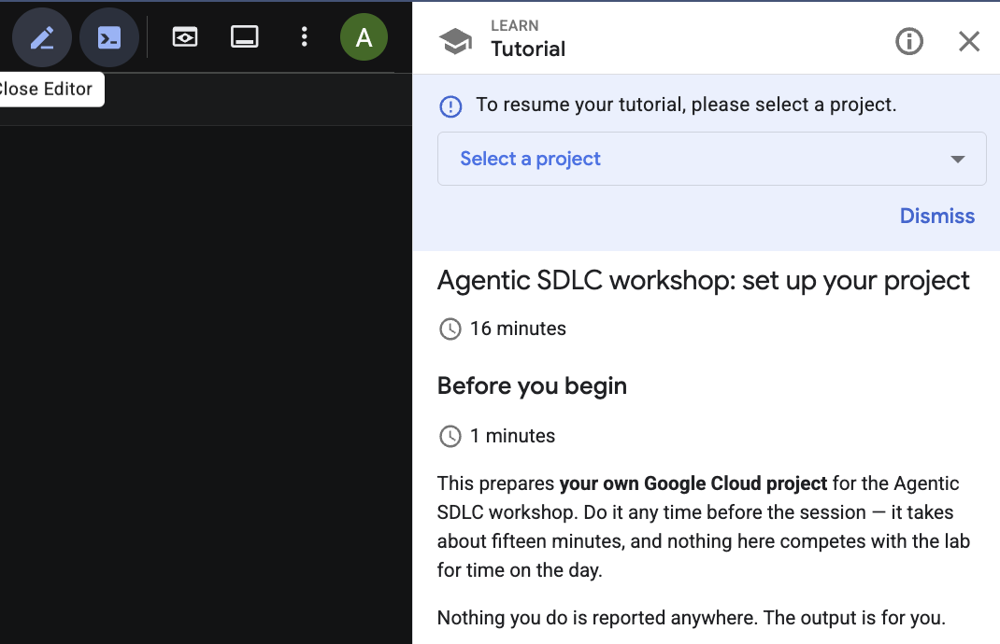

This prepares your own Google Cloud project for the Agentic SDLC workshop. Do it any time before the session — it takes about fifteen minutes, and nothing here competes with the lab for time on the day.
Nothing you do is reported anywhere. The output is for you.
gh CLI logged ingcloud, terraform, uv, gh and Node installedagy updated and authenticatedspec-adversary plugin installedThe quickest route is Cloud Shell, which already has most of the toolchain. The button clones the repository and opens this guide in a panel beside the shell, so each step sits next to the terminal you are typing it into — nothing to keep in a second tab, and nothing to alt-tab between.

Prefer your own machine? Clone it normally:
git clone https://github.com/alanblythe/workshop-agentic-sdlc.git
cd workshop-agentic-sdlc
Set the project you want to use:
gcloud config set project YOUR_PROJECT_ID
gcloud config get-value project
Then authenticate. You need two grants here, not one:
gcloud auth login --update-adc
--update-adc is the part people miss. Application Default Credentials are a separate file from your gcloud login, and Terraform reads only that file — never your gcloud configuration.
Two settings, and they are not the same value:
Variable | Value | What it controls |
|
| Where the model answers from |
|
| Where your agent runs |
export MODEL_LOCATION=global
export AGENT_ENGINE_LOCATION=us-central1
Preflight refuses to run if either is unset, or if the two match. There are no defaults on purpose: a guessed region builds a URL that resolves perfectly well and quietly points somewhere else.
Add both to ~/.bashrc if you want them to survive a new shell.
Cloud Shell ships agy already, but the version varies between sessions — 1.1.9 and 1.1.13 have been seen minutes apart. The workshop runs on the current release so everyone is on the same one.
sudo agy update && agy --version
It needs sudo because the binary lives in /usr/bin, and the unprivileged updater refuses with directory /usr/bin is not fully accessible. Cloud Shell grants passwordless sudo. It takes about twenty seconds, and the download runs on the Cloud Shell VM rather than over your own connection.
On a laptop, install it with brew install --cask antigravity-cli. The command is agy, not antigravity.
agy has its own login, separate from
gcloud. Authenticating gcloud does nothing for it — it holds its own OAuth grant with its own scopes. Two logins, not one. There is no agy login subcommand; authentication happens on first use.
Maximise your terminal first. The login prints a very long URL, and a narrow terminal wraps it across six or more lines, which makes it painful to select.
agy
You will be asked to open a URL, then to paste back a code. The URL is emitted as a terminal hyperlink, so try clicking it first. Approve in the browser, copy the code it shows, paste it into the authorization code... field, press Enter, then leave with /quit.
The browser does not have to be on this machine. The redirect goes to a hosted callback rather than a localhost listener, which is exactly what makes this work in Cloud Shell.
agy -p "Reply with exactly: authenticated"
Answering without prompting for a URL means the grant is in place. Unlike the binary, it lives under ~/.gemini and does survive a session recycle.
This checks everything above, then provisions your project.
Look first if you like — with --plan-only it changes nothing at all:
bash scripts/preflight.sh --plan-only
Then run it for real:
bash scripts/preflight.sh
It verifies your tools, that npm and github are reachable, that billing is linked, that the APIs are on, and that gemini-3.6-flash genuinely answers for you — with a real call, because a catalog entry describes the model rather than your access to it. Then it applies the Terraform.
A successful run ends with:
== ready ==
Everything checked out. Nothing to do until the session.
If you are on a corporate network, the checks most likely to fail are npm and github reachability. Both are needed before any Google Cloud resource is involved, because the ADK skills install through npx.
Preflight created an empty secret named agentic-sdlc-deploy-key. It stays empty until the day: the key is generated against the repository you fork during the lab, which does not exist yet.
Nothing is running, so nothing is costing you anything. The agent is deployed during the session, and the last step of the lab tears it all down again.
If you had to fix anything, re-run bash scripts/preflight.sh until it reports ready, and bring that result to the session.